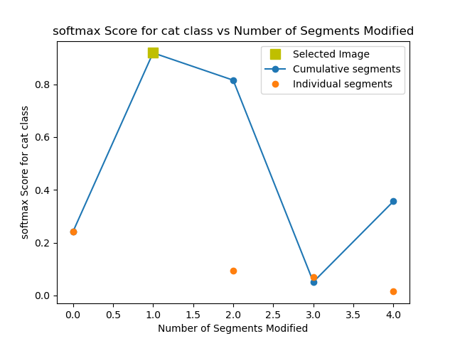
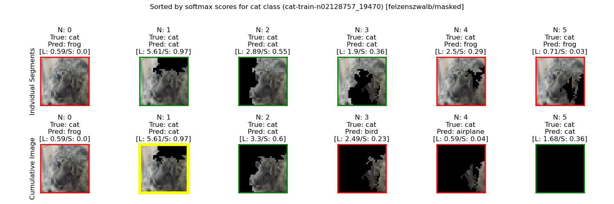
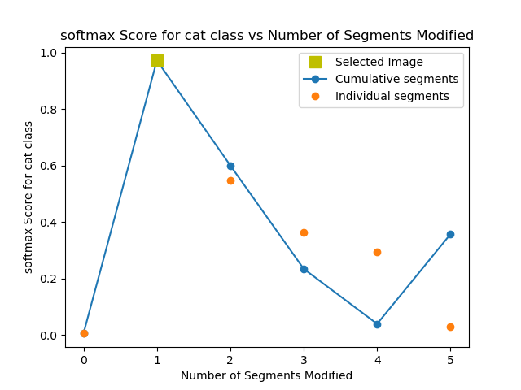
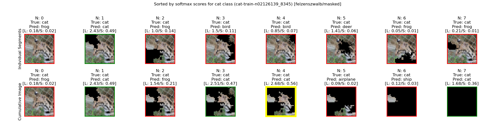
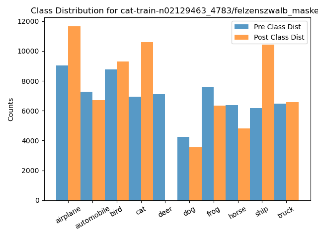
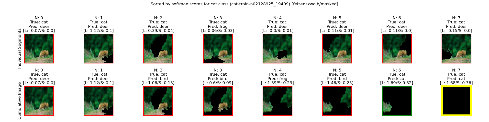
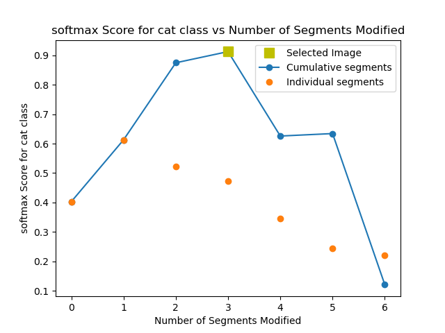
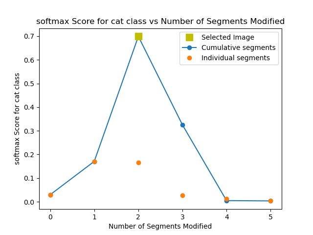
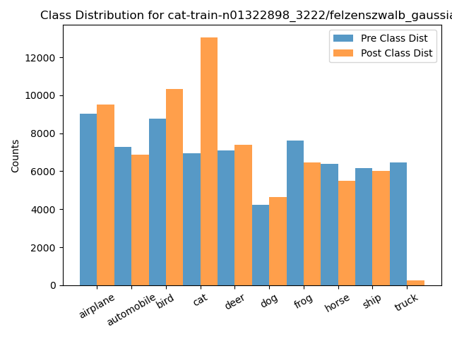
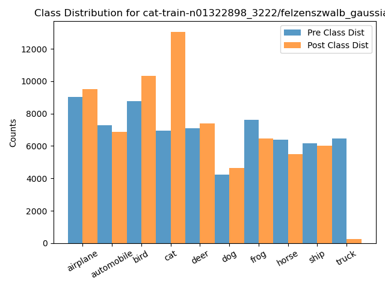

ID: cat-train-n02129165_2460/felzenszwalb_masked_softmax
Accuracy: 0.687 -> 0.506
Mean Recall: 0.687 -> 0.506
Mean Precision: 0.692 -> 0.786
Mean F1: 0.684 -> 0.486
Target Recall: 0.549 -> 0.941
Target Precision: 0.553 -> 0.2
Target F1: 0.551 -> 0.329
Orig Pred Recall: 0.743 -> 0.0
Orig Pred Precision: 0.594 -> 1.0
Orig Pred F1: 0.66 -> 0.001
ID: cat-train-n02128925_2563/felzenszwalb_masked_softmax
Accuracy: 0.687 -> 0.544
Mean Recall: 0.687 -> 0.544
Mean Precision: 0.692 -> 0.569
Mean F1: 0.684 -> 0.522
Target Recall: 0.549 -> 0.919
Target Precision: 0.553 -> 0.222
Target F1: 0.551 -> 0.358
Orig Pred Recall: 0.808 -> 0.0
Orig Pred Precision: 0.744 -> 0.0
Orig Pred F1: 0.775 -> 0.0
ID: cat-train-n02127052_6991/felzenszwalb_masked_softmax
Accuracy: 0.687 -> 0.548
Mean Recall: 0.687 -> 0.548
Mean Precision: 0.692 -> 0.555
Mean F1: 0.684 -> 0.519
Target Recall: 0.549 -> 0.888
Target Precision: 0.553 -> 0.235
Target F1: 0.551 -> 0.371
Orig Pred Recall: 0.61 -> 0.0
Orig Pred Precision: 0.6 -> 0.0
Orig Pred F1: 0.605 -> 0.0
ID: cat-train-n02125010_8921/felzenszwalb_masked_softmax
Accuracy: 0.687 -> 0.58
Mean Recall: 0.687 -> 0.58
Mean Precision: 0.692 -> 0.667
Mean F1: 0.684 -> 0.584
Target Recall: 0.549 -> 0.885
Target Precision: 0.553 -> 0.232
Target F1: 0.551 -> 0.367
Orig Pred Recall: 0.743 -> 0.0
Orig Pred Precision: 0.594 -> 0.0
Orig Pred F1: 0.66 -> 0.0

ID: cat-train-n02125010_1298/felzenszwalb_masked_softmax
Accuracy: 0.687 -> 0.544
Mean Recall: 0.687 -> 0.544
Mean Precision: 0.692 -> 0.576
Mean F1: 0.684 -> 0.527
Target Recall: 0.549 -> 0.879
Target Precision: 0.553 -> 0.215
Target F1: 0.551 -> 0.345
Orig Pred Recall: 0.427 -> 0.0
Orig Pred Precision: 0.706 -> 0.0
Orig Pred F1: 0.532 -> 0.0
ID: cat-train-n02130308_3673/felzenszwalb_masked_softmax
Accuracy: 0.687 -> 0.607
Mean Recall: 0.687 -> 0.607
Mean Precision: 0.692 -> 0.662
Mean F1: 0.684 -> 0.602
Target Recall: 0.549 -> 0.875
Target Precision: 0.553 -> 0.26
Target F1: 0.551 -> 0.401
Orig Pred Recall: 0.61 -> 0.0
Orig Pred Precision: 0.6 -> 0.0
Orig Pred F1: 0.605 -> 0.0

ID: cat-train-n02128757_5947/felzenszwalb_masked_softmax
Accuracy: 0.687 -> 0.539
Mean Recall: 0.687 -> 0.539
Mean Precision: 0.692 -> 0.554
Mean F1: 0.684 -> 0.515
Target Recall: 0.549 -> 0.871
Target Precision: 0.553 -> 0.218
Target F1: 0.551 -> 0.348
Orig Pred Recall: 0.743 -> 0.0
Orig Pred Precision: 0.594 -> 0.0
Orig Pred F1: 0.66 -> 0.0
ID: cat-train-n02127808_7183/felzenszwalb_masked_softmax
Accuracy: 0.687 -> 0.569
Mean Recall: 0.687 -> 0.569
Mean Precision: 0.692 -> 0.574
Mean F1: 0.684 -> 0.541
Target Recall: 0.549 -> 0.867
Target Precision: 0.553 -> 0.237
Target F1: 0.551 -> 0.372
Orig Pred Recall: 0.61 -> 0.0
Orig Pred Precision: 0.6 -> 0.0
Orig Pred F1: 0.605 -> 0.0
ID: cat-train-n02129923_9700/felzenszwalb_masked_softmax
Accuracy: 0.687 -> 0.589
Mean Recall: 0.687 -> 0.589
Mean Precision: 0.692 -> 0.663
Mean F1: 0.684 -> 0.587
Target Recall: 0.549 -> 0.865
Target Precision: 0.553 -> 0.241
Target F1: 0.551 -> 0.378
Orig Pred Recall: 0.743 -> 0.0
Orig Pred Precision: 0.594 -> 0.0
Orig Pred F1: 0.66 -> 0.0
ID: cat-train-n02129837_3890/felzenszwalb_masked_softmax
Accuracy: 0.687 -> 0.584
Mean Recall: 0.687 -> 0.584
Mean Precision: 0.692 -> 0.655
Mean F1: 0.684 -> 0.579
Target Recall: 0.549 -> 0.864
Target Precision: 0.553 -> 0.25
Target F1: 0.551 -> 0.388
Orig Pred Recall: 0.61 -> 0.0
Orig Pred Precision: 0.6 -> 0.0
Orig Pred F1: 0.605 -> 0.0
ID: cat-train-n02128757_1195/felzenszwalb_masked_softmax
Accuracy: 0.687 -> 0.563
Mean Recall: 0.687 -> 0.563
Mean Precision: 0.692 -> 0.545
Mean F1: 0.684 -> 0.53
Target Recall: 0.549 -> 0.862
Target Precision: 0.553 -> 0.243
Target F1: 0.551 -> 0.379
Orig Pred Recall: 0.808 -> 0.0
Orig Pred Precision: 0.744 -> 0.0
Orig Pred F1: 0.775 -> 0.0
ID: cat-train-n02123597_9846/felzenszwalb_masked_softmax
Accuracy: 0.687 -> 0.612
Mean Recall: 0.687 -> 0.612
Mean Precision: 0.692 -> 0.656
Mean F1: 0.684 -> 0.605
Target Recall: 0.549 -> 0.861
Target Precision: 0.553 -> 0.268
Target F1: 0.551 -> 0.408
Orig Pred Recall: 0.61 -> 0.0
Orig Pred Precision: 0.6 -> 0.0
Orig Pred F1: 0.605 -> 0.0
ID: cat-train-n02129604_18834/felzenszwalb_masked_softmax
Accuracy: 0.687 -> 0.598
Mean Recall: 0.687 -> 0.598
Mean Precision: 0.692 -> 0.649
Mean F1: 0.684 -> 0.586
Target Recall: 0.549 -> 0.857
Target Precision: 0.553 -> 0.273
Target F1: 0.551 -> 0.414
Orig Pred Recall: 0.61 -> 0.0
Orig Pred Precision: 0.6 -> 0.0
Orig Pred F1: 0.605 -> 0.0

ID: cat-train-n01323068_2382/felzenszwalb_masked_softmax
Accuracy: 0.687 -> 0.57
Mean Recall: 0.687 -> 0.57
Mean Precision: 0.692 -> 0.649
Mean F1: 0.684 -> 0.563
Target Recall: 0.549 -> 0.852
Target Precision: 0.553 -> 0.237
Target F1: 0.551 -> 0.371
Orig Pred Recall: 0.743 -> 0.0
Orig Pred Precision: 0.594 -> 0.0
Orig Pred F1: 0.66 -> 0.0
ID: cat-train-n02127052_6279/felzenszwalb_masked_softmax
Accuracy: 0.687 -> 0.603
Mean Recall: 0.687 -> 0.603
Mean Precision: 0.692 -> 0.651
Mean F1: 0.684 -> 0.597
Target Recall: 0.549 -> 0.849
Target Precision: 0.553 -> 0.256
Target F1: 0.551 -> 0.393
Orig Pred Recall: 0.743 -> 0.0
Orig Pred Precision: 0.594 -> 0.0
Orig Pred F1: 0.66 -> 0.0

ID: cat-train-n02128757_5802/felzenszwalb_masked_softmax
Accuracy: 0.687 -> 0.593
Mean Recall: 0.687 -> 0.593
Mean Precision: 0.692 -> 0.634
Mean F1: 0.684 -> 0.586
Target Recall: 0.549 -> 0.841
Target Precision: 0.553 -> 0.257
Target F1: 0.551 -> 0.394
Orig Pred Recall: 0.743 -> 0.593
Orig Pred Precision: 0.594 -> 0.779
Orig Pred F1: 0.66 -> 0.673
ID: cat-train-n01323068_2413/felzenszwalb_masked_softmax
Accuracy: 0.687 -> 0.543
Mean Recall: 0.687 -> 0.543
Mean Precision: 0.692 -> 0.634
Mean F1: 0.684 -> 0.502
Target Recall: 0.549 -> 0.84
Target Precision: 0.553 -> 0.261
Target F1: 0.551 -> 0.398
Orig Pred Recall: 0.808 -> 0.0
Orig Pred Precision: 0.744 -> 0.0
Orig Pred F1: 0.775 -> 0.0
ID: cat-train-n01323068_4036/felzenszwalb_masked_softmax
Accuracy: 0.687 -> 0.593
Mean Recall: 0.687 -> 0.593
Mean Precision: 0.692 -> 0.655
Mean F1: 0.684 -> 0.574
Target Recall: 0.549 -> 0.835
Target Precision: 0.553 -> 0.268
Target F1: 0.551 -> 0.406
Orig Pred Recall: 0.61 -> 0.0
Orig Pred Precision: 0.6 -> 0.0
Orig Pred F1: 0.605 -> 0.0

ID: cat-train-n02127808_5137/felzenszwalb_masked_softmax
Accuracy: 0.687 -> 0.576
Mean Recall: 0.687 -> 0.576
Mean Precision: 0.692 -> 0.631
Mean F1: 0.684 -> 0.549
Target Recall: 0.549 -> 0.834
Target Precision: 0.553 -> 0.259
Target F1: 0.551 -> 0.395
Orig Pred Recall: 0.808 -> 0.0
Orig Pred Precision: 0.744 -> 0.0
Orig Pred F1: 0.775 -> 0.0


ID: cat-train-n02129463_5850/felzenszwalb_masked_softmax
Accuracy: 0.687 -> 0.568
Mean Recall: 0.687 -> 0.568
Mean Precision: 0.692 -> 0.66
Mean F1: 0.684 -> 0.54
Target Recall: 0.549 -> 0.826
Target Precision: 0.553 -> 0.238
Target F1: 0.551 -> 0.369
Orig Pred Recall: 0.743 -> 0.043
Orig Pred Precision: 0.594 -> 1.0
Orig Pred F1: 0.66 -> 0.082

ID: cat-train-n02129165_2460/felzenszwalb_gaussian_softmax
Accuracy: 0.687 -> 0.593
Mean Recall: 0.687 -> 0.593
Mean Precision: 0.692 -> 0.651
Mean F1: 0.684 -> 0.584
Target Recall: 0.549 -> 0.816
Target Precision: 0.553 -> 0.246
Target F1: 0.551 -> 0.378
Orig Pred Recall: 0.743 -> 0.0
Orig Pred Precision: 0.594 -> 0.0
Orig Pred F1: 0.66 -> 0.0
ID: cat-train-n02128757_18438/felzenszwalb_masked_softmax
Accuracy: 0.687 -> 0.657
Mean Recall: 0.687 -> 0.657
Mean Precision: 0.692 -> 0.73
Mean F1: 0.684 -> 0.668
Target Recall: 0.549 -> 0.804
Target Precision: 0.553 -> 0.328
Target F1: 0.551 -> 0.466
Orig Pred Recall: 0.61 -> 0.435
Orig Pred Precision: 0.6 -> 0.776
Orig Pred F1: 0.605 -> 0.557
ID: cat-train-n02128385_4419/felzenszwalb_masked_softmax
Accuracy: 0.687 -> 0.659
Mean Recall: 0.687 -> 0.659
Mean Precision: 0.692 -> 0.729
Mean F1: 0.684 -> 0.663
Target Recall: 0.549 -> 0.798
Target Precision: 0.553 -> 0.336
Target F1: 0.551 -> 0.473
Orig Pred Recall: 0.61 -> 0.306
Orig Pred Precision: 0.6 -> 0.887
Orig Pred F1: 0.605 -> 0.455
ID: cat-train-n02128757_18818/felzenszwalb_masked_softmax
Accuracy: 0.687 -> 0.61
Mean Recall: 0.687 -> 0.61
Mean Precision: 0.692 -> 0.616
Mean F1: 0.684 -> 0.593
Target Recall: 0.549 -> 0.798
Target Precision: 0.553 -> 0.292
Target F1: 0.551 -> 0.428
Orig Pred Recall: 0.808 -> 0.0
Orig Pred Precision: 0.744 -> 0.0
Orig Pred F1: 0.775 -> 0.0

ID: cat-train-n02129463_576/felzenszwalb_masked_softmax
Accuracy: 0.687 -> 0.623
Mean Recall: 0.687 -> 0.623
Mean Precision: 0.692 -> 0.641
Mean F1: 0.684 -> 0.604
Target Recall: 0.549 -> 0.795
Target Precision: 0.553 -> 0.302
Target F1: 0.551 -> 0.438
Orig Pred Recall: 0.61 -> 0.354
Orig Pred Precision: 0.6 -> 0.854
Orig Pred F1: 0.605 -> 0.5

ID: cat-train-n02129837_7011/felzenszwalb_masked_softmax
Accuracy: 0.687 -> 0.627
Mean Recall: 0.687 -> 0.627
Mean Precision: 0.692 -> 0.633
Mean F1: 0.684 -> 0.61
Target Recall: 0.549 -> 0.789
Target Precision: 0.553 -> 0.3
Target F1: 0.551 -> 0.435
Orig Pred Recall: 0.61 -> 0.0
Orig Pred Precision: 0.6 -> 0.0
Orig Pred F1: 0.605 -> 0.0

ID: cat-train-n02129604_1431/felzenszwalb_masked_softmax
Accuracy: 0.687 -> 0.501
Mean Recall: 0.687 -> 0.501
Mean Precision: 0.692 -> 0.615
Mean F1: 0.684 -> 0.443
Target Recall: 0.549 -> 0.782
Target Precision: 0.553 -> 0.252
Target F1: 0.551 -> 0.382
Orig Pred Recall: 0.734 -> 0.0
Orig Pred Precision: 0.804 -> 0.0
Orig Pred F1: 0.767 -> 0.0
ID: cat-train-n02127052_1053/felzenszwalb_masked_softmax
Accuracy: 0.687 -> 0.613
Mean Recall: 0.687 -> 0.613
Mean Precision: 0.692 -> 0.611
Mean F1: 0.684 -> 0.594
Target Recall: 0.549 -> 0.78
Target Precision: 0.553 -> 0.3
Target F1: 0.551 -> 0.433
Orig Pred Recall: 0.808 -> 0.0
Orig Pred Precision: 0.744 -> 0.0
Orig Pred F1: 0.775 -> 0.0
ID: cat-train-n02128925_28108/felzenszwalb_masked_softmax
Accuracy: 0.687 -> 0.615
Mean Recall: 0.687 -> 0.615
Mean Precision: 0.692 -> 0.632
Mean F1: 0.684 -> 0.602
Target Recall: 0.549 -> 0.78
Target Precision: 0.553 -> 0.275
Target F1: 0.551 -> 0.406
Orig Pred Recall: 0.743 -> 0.0
Orig Pred Precision: 0.594 -> 0.0
Orig Pred F1: 0.66 -> 0.0


ID: cat-train-n01322898_405/felzenszwalb_masked_softmax
Accuracy: 0.687 -> 0.63
Mean Recall: 0.687 -> 0.63
Mean Precision: 0.692 -> 0.63
Mean F1: 0.684 -> 0.612
Target Recall: 0.549 -> 0.777
Target Precision: 0.553 -> 0.307
Target F1: 0.551 -> 0.44
Orig Pred Recall: 0.61 -> 0.0
Orig Pred Precision: 0.6 -> 0.0
Orig Pred F1: 0.605 -> 0.0

ID: cat-train-n02129463_2031/felzenszwalb_masked_softmax
Accuracy: 0.687 -> 0.635
Mean Recall: 0.687 -> 0.635
Mean Precision: 0.692 -> 0.628
Mean F1: 0.684 -> 0.614
Target Recall: 0.549 -> 0.775
Target Precision: 0.553 -> 0.339
Target F1: 0.551 -> 0.472
Orig Pred Recall: 0.427 -> 0.0
Orig Pred Precision: 0.706 -> 0.0
Orig Pred F1: 0.532 -> 0.0

ID: cat-train-n02123242_3574/felzenszwalb_masked_softmax
Accuracy: 0.687 -> 0.616
Mean Recall: 0.687 -> 0.616
Mean Precision: 0.692 -> 0.63
Mean F1: 0.684 -> 0.602
Target Recall: 0.549 -> 0.772
Target Precision: 0.553 -> 0.277
Target F1: 0.551 -> 0.408
Orig Pred Recall: 0.743 -> 0.0
Orig Pred Precision: 0.594 -> 0.0
Orig Pred F1: 0.66 -> 0.0
ID: cat-train-n02129604_6962/felzenszwalb_masked_softmax
Accuracy: 0.687 -> 0.628
Mean Recall: 0.687 -> 0.628
Mean Precision: 0.692 -> 0.631
Mean F1: 0.684 -> 0.61
Target Recall: 0.549 -> 0.768
Target Precision: 0.553 -> 0.3
Target F1: 0.551 -> 0.431
Orig Pred Recall: 0.61 -> 0.0
Orig Pred Precision: 0.6 -> 0.0
Orig Pred F1: 0.605 -> 0.0
ID: cat-train-n02122298_15275/felzenszwalb_masked_softmax
Accuracy: 0.687 -> 0.599
Mean Recall: 0.687 -> 0.599
Mean Precision: 0.692 -> 0.636
Mean F1: 0.684 -> 0.592
Target Recall: 0.549 -> 0.768
Target Precision: 0.553 -> 0.242
Target F1: 0.551 -> 0.368
Orig Pred Recall: 0.743 -> 0.622
Orig Pred Precision: 0.594 -> 0.751
Orig Pred F1: 0.66 -> 0.681

ID: cat-train-n02128757_2820/felzenszwalb_masked_softmax
Accuracy: 0.687 -> 0.564
Mean Recall: 0.687 -> 0.564
Mean Precision: 0.692 -> 0.543
Mean F1: 0.684 -> 0.53
Target Recall: 0.549 -> 0.767
Target Precision: 0.553 -> 0.23
Target F1: 0.551 -> 0.354
Orig Pred Recall: 0.688 -> 0.0
Orig Pred Precision: 0.78 -> 0.0
Orig Pred F1: 0.731 -> 0.0
ID: cat-train-n02128757_19470/felzenszwalb_masked_softmax
Accuracy: 0.687 -> 0.614
Mean Recall: 0.687 -> 0.614
Mean Precision: 0.692 -> 0.609
Mean F1: 0.684 -> 0.595
Target Recall: 0.549 -> 0.767
Target Precision: 0.553 -> 0.302
Target F1: 0.551 -> 0.433
Orig Pred Recall: 0.808 -> 0.0
Orig Pred Precision: 0.744 -> 0.0
Orig Pred F1: 0.775 -> 0.0
 ID: cat-train-n02127808_9720/felzenszwalb_masked_softmax
Accuracy: 0.687 -> 0.629
Mean Recall: 0.687 -> 0.629
Mean Precision: 0.692 -> 0.627
Mean F1: 0.684 -> 0.609
Target Recall: 0.549 -> 0.764
Target Precision: 0.553 -> 0.307
Target F1: 0.551 -> 0.438
Orig Pred Recall: 0.61 -> 0.0
Orig Pred Precision: 0.6 -> 0.0
Orig Pred F1: 0.605 -> 0.0
ID: cat-train-n02128757_1157/felzenszwalb_masked_softmax
Accuracy: 0.687 -> 0.614
Mean Recall: 0.687 -> 0.614
Mean Precision: 0.692 -> 0.609
Mean F1: 0.684 -> 0.594
Target Recall: 0.549 -> 0.763
Target Precision: 0.553 -> 0.303
Target F1: 0.551 -> 0.434
Orig Pred Recall: 0.808 -> 0.0
Orig Pred Precision: 0.744 -> 0.0
Orig Pred F1: 0.775 -> 0.0
ID: cat-train-n02126139_1735/felzenszwalb_masked_softmax
Accuracy: 0.687 -> 0.631
Mean Recall: 0.687 -> 0.631
Mean Precision: 0.692 -> 0.629
Mean F1: 0.684 -> 0.611
Target Recall: 0.549 -> 0.761
Target Precision: 0.553 -> 0.305
Target F1: 0.551 -> 0.435
Orig Pred Recall: 0.61 -> 0.0
Orig Pred Precision: 0.6 -> 0.0
Orig Pred F1: 0.605 -> 0.0

ID: cat-train-n02129463_1612/felzenszwalb_masked_softmax
Accuracy: 0.687 -> 0.615
Mean Recall: 0.687 -> 0.615
Mean Precision: 0.692 -> 0.607
Mean F1: 0.684 -> 0.594
Target Recall: 0.549 -> 0.752
Target Precision: 0.553 -> 0.307
Target F1: 0.551 -> 0.437
Orig Pred Recall: 0.808 -> 0.0
Orig Pred Precision: 0.744 -> 0.0
Orig Pred F1: 0.775 -> 0.0
ID: cat-train-n02123159_2484/felzenszwalb_masked_softmax
Accuracy: 0.687 -> 0.628
Mean Recall: 0.687 -> 0.628
Mean Precision: 0.692 -> 0.628
Mean F1: 0.684 -> 0.61
Target Recall: 0.549 -> 0.75
Target Precision: 0.553 -> 0.304
Target F1: 0.551 -> 0.433
Orig Pred Recall: 0.61 -> 0.0
Orig Pred Precision: 0.6 -> 0.0
Orig Pred F1: 0.605 -> 0.0
ID: cat-train-n02129165_4029/felzenszwalb_masked_softmax
Accuracy: 0.687 -> 0.644
Mean Recall: 0.687 -> 0.644
Mean Precision: 0.692 -> 0.718
Mean F1: 0.684 -> 0.633
Target Recall: 0.549 -> 0.75
Target Precision: 0.553 -> 0.35
Target F1: 0.551 -> 0.477
Orig Pred Recall: 0.61 -> 0.122
Orig Pred Precision: 0.6 -> 0.927
Orig Pred F1: 0.605 -> 0.216
ID: cat-train-n02123394_10486/felzenszwalb_masked_softmax
Accuracy: 0.687 -> 0.636
Mean Recall: 0.687 -> 0.636
Mean Precision: 0.692 -> 0.623
Mean F1: 0.684 -> 0.614
Target Recall: 0.549 -> 0.744
Target Precision: 0.553 -> 0.344
Target F1: 0.551 -> 0.47
Orig Pred Recall: 0.427 -> 0.0
Orig Pred Precision: 0.706 -> 0.0
Orig Pred F1: 0.532 -> 0.0
ID: cat-train-n02128757_20346/felzenszwalb_masked_softmax
Accuracy: 0.687 -> 0.632
Mean Recall: 0.687 -> 0.632
Mean Precision: 0.692 -> 0.624
Mean F1: 0.684 -> 0.611
Target Recall: 0.549 -> 0.741
Target Precision: 0.553 -> 0.32
Target F1: 0.551 -> 0.447
Orig Pred Recall: 0.61 -> 0.0
Orig Pred Precision: 0.6 -> 0.0
Orig Pred F1: 0.605 -> 0.0

ID: cat-train-n02129604_1431/felzenszwalb_gaussian_softmax
Accuracy: 0.687 -> 0.503
Mean Recall: 0.687 -> 0.503
Mean Precision: 0.692 -> 0.523
Mean F1: 0.684 -> 0.44
Target Recall: 0.549 -> 0.737
Target Precision: 0.553 -> 0.241
Target F1: 0.551 -> 0.363
Orig Pred Recall: 0.734 -> 0.0
Orig Pred Precision: 0.804 -> 0.0
Orig Pred F1: 0.767 -> 0.0
ID: cat-train-n01323068_127/felzenszwalb_masked_softmax
Accuracy: 0.687 -> 0.672
Mean Recall: 0.687 -> 0.672
Mean Precision: 0.692 -> 0.71
Mean F1: 0.684 -> 0.675
Target Recall: 0.549 -> 0.735
Target Precision: 0.553 -> 0.404
Target F1: 0.551 -> 0.521
Orig Pred Recall: 0.808 -> 0.587
Orig Pred Precision: 0.744 -> 0.94
Orig Pred F1: 0.775 -> 0.723
ID: cat-train-n02124313_11678/felzenszwalb_masked_softmax
Accuracy: 0.687 -> 0.635
Mean Recall: 0.687 -> 0.635
Mean Precision: 0.692 -> 0.619
Mean F1: 0.684 -> 0.612
Target Recall: 0.549 -> 0.732
Target Precision: 0.553 -> 0.326
Target F1: 0.551 -> 0.452
Orig Pred Recall: 0.61 -> 0.0
Orig Pred Precision: 0.6 -> 0.0
Orig Pred F1: 0.605 -> 0.0
ID: cat-train-n02130086_2573/felzenszwalb_masked_softmax
Accuracy: 0.687 -> 0.634
Mean Recall: 0.687 -> 0.634
Mean Precision: 0.692 -> 0.621
Mean F1: 0.684 -> 0.611
Target Recall: 0.549 -> 0.729
Target Precision: 0.553 -> 0.322
Target F1: 0.551 -> 0.447
Orig Pred Recall: 0.61 -> 0.0
Orig Pred Precision: 0.6 -> 0.0
Orig Pred F1: 0.605 -> 0.0

ID: cat-train-n02127808_3447/felzenszwalb_masked_softmax
Accuracy: 0.687 -> 0.616
Mean Recall: 0.687 -> 0.616
Mean Precision: 0.692 -> 0.602
Mean F1: 0.684 -> 0.595
Target Recall: 0.549 -> 0.728
Target Precision: 0.553 -> 0.311
Target F1: 0.551 -> 0.436
Orig Pred Recall: 0.808 -> 0.0
Orig Pred Precision: 0.744 -> 0.0
Orig Pred F1: 0.775 -> 0.0
ID: cat-train-n02125494_807/felzenszwalb_masked_softmax
Accuracy: 0.687 -> 0.675
Mean Recall: 0.687 -> 0.675
Mean Precision: 0.692 -> 0.71
Mean F1: 0.684 -> 0.679
Target Recall: 0.549 -> 0.728
Target Precision: 0.553 -> 0.405
Target F1: 0.551 -> 0.52
Orig Pred Recall: 0.61 -> 0.558
Orig Pred Precision: 0.6 -> 0.653
Orig Pred F1: 0.605 -> 0.602


ID: cat-train-n02126139_1586/felzenszwalb_masked_softmax
Accuracy: 0.687 -> 0.673
Mean Recall: 0.687 -> 0.673
Mean Precision: 0.692 -> 0.709
Mean F1: 0.684 -> 0.673
Target Recall: 0.549 -> 0.727
Target Precision: 0.553 -> 0.43
Target F1: 0.551 -> 0.541
Orig Pred Recall: 0.61 -> 0.428
Orig Pred Precision: 0.6 -> 0.783
Orig Pred F1: 0.605 -> 0.553

ID: cat-train-n02123159_2484/felzenszwalb_gaussian_softmax
Accuracy: 0.687 -> 0.635
Mean Recall: 0.687 -> 0.635
Mean Precision: 0.692 -> 0.622
Mean F1: 0.684 -> 0.613
Target Recall: 0.549 -> 0.726
Target Precision: 0.553 -> 0.319
Target F1: 0.551 -> 0.443
Orig Pred Recall: 0.61 -> 0.0
Orig Pred Precision: 0.6 -> 0.0
Orig Pred F1: 0.605 -> 0.0

ID: cat-train-n02128385_6134/felzenszwalb_masked_softmax
Accuracy: 0.687 -> 0.603
Mean Recall: 0.687 -> 0.603
Mean Precision: 0.692 -> 0.602
Mean F1: 0.684 -> 0.581
Target Recall: 0.549 -> 0.726
Target Precision: 0.553 -> 0.319
Target F1: 0.551 -> 0.443
Orig Pred Recall: 0.808 -> 0.0
Orig Pred Precision: 0.744 -> 0.0
Orig Pred F1: 0.775 -> 0.0
ID: cat-train-n02123394_10486/felzenszwalb_gaussian_softmax
Accuracy: 0.687 -> 0.641
Mean Recall: 0.687 -> 0.641
Mean Precision: 0.692 -> 0.621
Mean F1: 0.684 -> 0.618
Target Recall: 0.549 -> 0.726
Target Precision: 0.553 -> 0.35
Target F1: 0.551 -> 0.473
Orig Pred Recall: 0.427 -> 0.0
Orig Pred Precision: 0.706 -> 0.0
Orig Pred F1: 0.532 -> 0.0
ID: cat-train-n02129604_11283/felzenszwalb_masked_softmax
Accuracy: 0.687 -> 0.637
Mean Recall: 0.687 -> 0.637
Mean Precision: 0.692 -> 0.62
Mean F1: 0.684 -> 0.615
Target Recall: 0.549 -> 0.724
Target Precision: 0.553 -> 0.321
Target F1: 0.551 -> 0.445
Orig Pred Recall: 0.61 -> 0.0
Orig Pred Precision: 0.6 -> 0.0
Orig Pred F1: 0.605 -> 0.0
ID: cat-train-n01323068_5520/felzenszwalb_masked_softmax
Accuracy: 0.687 -> 0.67
Mean Recall: 0.687 -> 0.67
Mean Precision: 0.692 -> 0.715
Mean F1: 0.684 -> 0.673
Target Recall: 0.549 -> 0.723
Target Precision: 0.553 -> 0.39
Target F1: 0.551 -> 0.507
Orig Pred Recall: 0.743 -> 0.485
Orig Pred Precision: 0.594 -> 0.885
Orig Pred F1: 0.66 -> 0.626
ID: cat-train-n02125010_8921/felzenszwalb_gaussian_softmax
Accuracy: 0.687 -> 0.682
Mean Recall: 0.687 -> 0.682
Mean Precision: 0.692 -> 0.711
Mean F1: 0.684 -> 0.685
Target Recall: 0.549 -> 0.72
Target Precision: 0.553 -> 0.397
Target F1: 0.551 -> 0.512
Orig Pred Recall: 0.743 -> 0.654
Orig Pred Precision: 0.594 -> 0.708
Orig Pred F1: 0.66 -> 0.68
ID: cat-train-n02126139_7981/felzenszwalb_masked_softmax
Accuracy: 0.687 -> 0.638
Mean Recall: 0.687 -> 0.638
Mean Precision: 0.692 -> 0.617
Mean F1: 0.684 -> 0.613
Target Recall: 0.549 -> 0.72
Target Precision: 0.553 -> 0.334
Target F1: 0.551 -> 0.456
Orig Pred Recall: 0.61 -> 0.0
Orig Pred Precision: 0.6 -> 0.0
Orig Pred F1: 0.605 -> 0.0
ID: cat-train-n02126139_8345/felzenszwalb_masked_softmax
Accuracy: 0.687 -> 0.609
Mean Recall: 0.687 -> 0.609
Mean Precision: 0.692 -> 0.601
Mean F1: 0.684 -> 0.587
Target Recall: 0.549 -> 0.718
Target Precision: 0.553 -> 0.315
Target F1: 0.551 -> 0.438
Orig Pred Recall: 0.808 -> 0.0
Orig Pred Precision: 0.744 -> 0.0
Orig Pred F1: 0.775 -> 0.0
ID: cat-train-n02130308_1836/felzenszwalb_masked_softmax
Accuracy: 0.687 -> 0.682
Mean Recall: 0.687 -> 0.682
Mean Precision: 0.692 -> 0.707
Mean F1: 0.684 -> 0.685
Target Recall: 0.549 -> 0.716
Target Precision: 0.553 -> 0.419
Target F1: 0.551 -> 0.528
Orig Pred Recall: 0.743 -> 0.645
Orig Pred Precision: 0.594 -> 0.723
Orig Pred F1: 0.66 -> 0.682
ID: cat-train-n02127052_1053/felzenszwalb_gaussian_softmax
Accuracy: 0.687 -> 0.663
Mean Recall: 0.687 -> 0.663
Mean Precision: 0.692 -> 0.707
Mean F1: 0.684 -> 0.665
Target Recall: 0.549 -> 0.713
Target Precision: 0.553 -> 0.402
Target F1: 0.551 -> 0.515
Orig Pred Recall: 0.808 -> 0.492
Orig Pred Precision: 0.744 -> 0.964
Orig Pred F1: 0.775 -> 0.652
ID: cat-train-n02129463_1612/felzenszwalb_gaussian_softmax
Accuracy: 0.687 -> 0.615
Mean Recall: 0.687 -> 0.615
Mean Precision: 0.692 -> 0.6
Mean F1: 0.684 -> 0.592
Target Recall: 0.549 -> 0.712
Target Precision: 0.553 -> 0.316
Target F1: 0.551 -> 0.438
Orig Pred Recall: 0.808 -> 0.0
Orig Pred Precision: 0.744 -> 0.0
Orig Pred F1: 0.775 -> 0.0

ID: cat-train-n02127808_7361/felzenszwalb_masked_softmax
Accuracy: 0.687 -> 0.664
Mean Recall: 0.687 -> 0.664
Mean Precision: 0.692 -> 0.71
Mean F1: 0.684 -> 0.665
Target Recall: 0.549 -> 0.705
Target Precision: 0.553 -> 0.377
Target F1: 0.551 -> 0.492
Orig Pred Recall: 0.743 -> 0.406
Orig Pred Precision: 0.594 -> 0.933
Orig Pred F1: 0.66 -> 0.566
ID: cat-train-n02129165_9343/felzenszwalb_masked_softmax
Accuracy: 0.687 -> 0.674
Mean Recall: 0.687 -> 0.674
Mean Precision: 0.692 -> 0.709
Mean F1: 0.684 -> 0.675
Target Recall: 0.549 -> 0.702
Target Precision: 0.553 -> 0.401
Target F1: 0.551 -> 0.51
Orig Pred Recall: 0.743 -> 0.505
Orig Pred Precision: 0.594 -> 0.862
Orig Pred F1: 0.66 -> 0.637
ID: cat-train-n02129991_2257/felzenszwalb_masked_softmax
Accuracy: 0.687 -> 0.645
Mean Recall: 0.687 -> 0.645
Mean Precision: 0.692 -> 0.618
Mean F1: 0.684 -> 0.62
Target Recall: 0.549 -> 0.701
Target Precision: 0.553 -> 0.366
Target F1: 0.551 -> 0.481
Orig Pred Recall: 0.427 -> 0.0
Orig Pred Precision: 0.706 -> 0.0
Orig Pred F1: 0.532 -> 0.0
ID: cat-train-n02129991_1363/felzenszwalb_masked_softmax
Accuracy: 0.687 -> 0.627
Mean Recall: 0.687 -> 0.627
Mean Precision: 0.692 -> 0.609
Mean F1: 0.684 -> 0.605
Target Recall: 0.549 -> 0.699
Target Precision: 0.553 -> 0.317
Target F1: 0.551 -> 0.437
Orig Pred Recall: 0.743 -> 0.0
Orig Pred Precision: 0.594 -> 0.0
Orig Pred F1: 0.66 -> 0.0


ID: cat-train-n01322898_3222/felzenszwalb_masked_softmax
Accuracy: 0.687 -> 0.606
Mean Recall: 0.687 -> 0.606
Mean Precision: 0.692 -> 0.612
Mean F1: 0.684 -> 0.592
Target Recall: 0.549 -> 0.697
Target Precision: 0.553 -> 0.275
Target F1: 0.551 -> 0.394
Orig Pred Recall: 0.668 -> 0.0
Orig Pred Precision: 0.722 -> 0.0
Orig Pred F1: 0.694 -> 0.0


ID: cat-train-n02128757_1899/felzenszwalb_masked_softmax
Accuracy: 0.687 -> 0.618
Mean Recall: 0.687 -> 0.618
Mean Precision: 0.692 -> 0.597
Mean F1: 0.684 -> 0.595
Target Recall: 0.549 -> 0.696
Target Precision: 0.553 -> 0.32
Target F1: 0.551 -> 0.439
Orig Pred Recall: 0.808 -> 0.0
Orig Pred Precision: 0.744 -> 0.0
Orig Pred F1: 0.775 -> 0.0
ID: cat-train-n02123394_1900/felzenszwalb_masked_softmax
Accuracy: 0.687 -> 0.654
Mean Recall: 0.687 -> 0.654
Mean Precision: 0.692 -> 0.713
Mean F1: 0.684 -> 0.653
Target Recall: 0.549 -> 0.692
Target Precision: 0.553 -> 0.371
Target F1: 0.551 -> 0.483
Orig Pred Recall: 0.743 -> 0.33
Orig Pred Precision: 0.594 -> 0.963
Orig Pred F1: 0.66 -> 0.492
ID: cat-train-n02128925_2018/felzenszwalb_masked_softmax
Accuracy: 0.687 -> 0.673
Mean Recall: 0.687 -> 0.673
Mean Precision: 0.692 -> 0.704
Mean F1: 0.684 -> 0.671
Target Recall: 0.549 -> 0.689
Target Precision: 0.553 -> 0.449
Target F1: 0.551 -> 0.543
Orig Pred Recall: 0.61 -> 0.411
Orig Pred Precision: 0.6 -> 0.794
Orig Pred F1: 0.605 -> 0.542
ID: cat-train-n02121808_12412/felzenszwalb_masked_softmax
Accuracy: 0.687 -> 0.676
Mean Recall: 0.687 -> 0.676
Mean Precision: 0.692 -> 0.702
Mean F1: 0.684 -> 0.676
Target Recall: 0.549 -> 0.686
Target Precision: 0.553 -> 0.456
Target F1: 0.551 -> 0.547
Orig Pred Recall: 0.808 -> 0.642
Orig Pred Precision: 0.744 -> 0.919
Orig Pred F1: 0.775 -> 0.756

ID: cat-train-n02129604_7804/felzenszwalb_masked_softmax
Accuracy: 0.687 -> 0.683
Mean Recall: 0.687 -> 0.683
Mean Precision: 0.692 -> 0.703
Mean F1: 0.684 -> 0.683
Target Recall: 0.549 -> 0.685
Target Precision: 0.553 -> 0.447
Target F1: 0.551 -> 0.541
Orig Pred Recall: 0.61 -> 0.513
Orig Pred Precision: 0.6 -> 0.702
Orig Pred F1: 0.605 -> 0.593
ID: cat-train-n02129463_4783/felzenszwalb_masked_softmax
Accuracy: 0.687 -> 0.619
Mean Recall: 0.687 -> 0.619
Mean Precision: 0.692 -> 0.598
Mean F1: 0.684 -> 0.589
Target Recall: 0.549 -> 0.681
Target Precision: 0.553 -> 0.45
Target F1: 0.551 -> 0.542
Orig Pred Recall: 0.61 -> 0.0
Orig Pred Precision: 0.6 -> 0.0
Orig Pred F1: 0.605 -> 0.0
ID: cat-train-n02128385_891/felzenszwalb_masked_softmax
Accuracy: 0.687 -> 0.684
Mean Recall: 0.687 -> 0.684
Mean Precision: 0.692 -> 0.702
Mean F1: 0.684 -> 0.684
Target Recall: 0.549 -> 0.681
Target Precision: 0.553 -> 0.433
Target F1: 0.551 -> 0.53
Orig Pred Recall: 0.743 -> 0.637
Orig Pred Precision: 0.594 -> 0.73
Orig Pred F1: 0.66 -> 0.68
ID: cat-train-n02129463_576/felzenszwalb_gaussian_softmax
Accuracy: 0.687 -> 0.658
Mean Recall: 0.687 -> 0.658
Mean Precision: 0.692 -> 0.713
Mean F1: 0.684 -> 0.655
Target Recall: 0.549 -> 0.681
Target Precision: 0.553 -> 0.386
Target F1: 0.551 -> 0.492
Orig Pred Recall: 0.61 -> 0.44
Orig Pred Precision: 0.6 -> 0.769
Orig Pred F1: 0.605 -> 0.56
ID: cat-train-n02122725_6929/felzenszwalb_masked_softmax
Accuracy: 0.687 -> 0.635
Mean Recall: 0.687 -> 0.635
Mean Precision: 0.692 -> 0.611
Mean F1: 0.684 -> 0.609
Target Recall: 0.549 -> 0.681
Target Precision: 0.553 -> 0.346
Target F1: 0.551 -> 0.459
Orig Pred Recall: 0.61 -> 0.0
Orig Pred Precision: 0.6 -> 0.0
Orig Pred F1: 0.605 -> 0.0
ID: cat-train-n02125081_3483/felzenszwalb_masked_softmax
Accuracy: 0.687 -> 0.625
Mean Recall: 0.687 -> 0.625
Mean Precision: 0.692 -> 0.61
Mean F1: 0.684 -> 0.603
Target Recall: 0.549 -> 0.676
Target Precision: 0.553 -> 0.304
Target F1: 0.551 -> 0.419
Orig Pred Recall: 0.743 -> 0.0
Orig Pred Precision: 0.594 -> 0.0
Orig Pred F1: 0.66 -> 0.0
ID: cat-train-n02128757_5769/felzenszwalb_masked_softmax
Accuracy: 0.687 -> 0.653
Mean Recall: 0.687 -> 0.653
Mean Precision: 0.692 -> 0.697
Mean F1: 0.684 -> 0.651
Target Recall: 0.549 -> 0.673
Target Precision: 0.553 -> 0.396
Target F1: 0.551 -> 0.499
Orig Pred Recall: 0.808 -> 0.35
Orig Pred Precision: 0.744 -> 0.978
Orig Pred F1: 0.775 -> 0.516
ID: cat-train-n02124313_8242/felzenszwalb_masked_softmax
Accuracy: 0.687 -> 0.643
Mean Recall: 0.687 -> 0.643
Mean Precision: 0.692 -> 0.61
Mean F1: 0.684 -> 0.616
Target Recall: 0.549 -> 0.673
Target Precision: 0.553 -> 0.378
Target F1: 0.551 -> 0.484
Orig Pred Recall: 0.427 -> 0.0
Orig Pred Precision: 0.706 -> 0.0
Orig Pred F1: 0.532 -> 0.0
ID: cat-train-n01322898_6456/felzenszwalb_masked_softmax
Accuracy: 0.687 -> 0.643
Mean Recall: 0.687 -> 0.643
Mean Precision: 0.692 -> 0.711
Mean F1: 0.684 -> 0.621
Target Recall: 0.549 -> 0.672
Target Precision: 0.553 -> 0.351
Target F1: 0.551 -> 0.461
Orig Pred Recall: 0.61 -> 0.046
Orig Pred Precision: 0.6 -> 0.994
Orig Pred F1: 0.605 -> 0.088

ID: cat-train-n02129837_1030/felzenszwalb_masked_softmax
Accuracy: 0.687 -> 0.672
Mean Recall: 0.687 -> 0.672
Mean Precision: 0.692 -> 0.698
Mean F1: 0.684 -> 0.668
Target Recall: 0.549 -> 0.671
Target Precision: 0.553 -> 0.443
Target F1: 0.551 -> 0.534
Orig Pred Recall: 0.61 -> 0.401
Orig Pred Precision: 0.6 -> 0.809
Orig Pred F1: 0.605 -> 0.536
ID: cat-train-n02128385_12321/felzenszwalb_masked_softmax
Accuracy: 0.687 -> 0.619
Mean Recall: 0.687 -> 0.619
Mean Precision: 0.692 -> 0.594
Mean F1: 0.684 -> 0.594
Target Recall: 0.549 -> 0.671
Target Precision: 0.553 -> 0.327
Target F1: 0.551 -> 0.44
Orig Pred Recall: 0.808 -> 0.0
Orig Pred Precision: 0.744 -> 0.0
Orig Pred F1: 0.775 -> 0.0
ID: cat-train-n02129604_497/felzenszwalb_masked_softmax
Accuracy: 0.687 -> 0.642
Mean Recall: 0.687 -> 0.642
Mean Precision: 0.692 -> 0.612
Mean F1: 0.684 -> 0.617
Target Recall: 0.549 -> 0.67
Target Precision: 0.553 -> 0.365
Target F1: 0.551 -> 0.473
Orig Pred Recall: 0.427 -> 0.0
Orig Pred Precision: 0.706 -> 0.0
Orig Pred F1: 0.532 -> 0.0
ID: cat-train-n02129923_2973/felzenszwalb_gaussian_softmax
Accuracy: 0.687 -> 0.684
Mean Recall: 0.687 -> 0.684
Mean Precision: 0.692 -> 0.703
Mean F1: 0.684 -> 0.683
Target Recall: 0.549 -> 0.67
Target Precision: 0.553 -> 0.433
Target F1: 0.551 -> 0.526
Orig Pred Recall: 0.743 -> 0.609
Orig Pred Precision: 0.594 -> 0.763
Orig Pred F1: 0.66 -> 0.677

ID: cat-train-n02125311_6542/felzenszwalb_masked_softmax
Accuracy: 0.687 -> 0.68
Mean Recall: 0.687 -> 0.68
Mean Precision: 0.692 -> 0.706
Mean F1: 0.684 -> 0.684
Target Recall: 0.549 -> 0.67
Target Precision: 0.553 -> 0.392
Target F1: 0.551 -> 0.494
Orig Pred Recall: 0.877 -> 0.811
Orig Pred Precision: 0.68 -> 0.816
Orig Pred F1: 0.766 -> 0.813
ID: cat-train-n02129165_19696/felzenszwalb_masked_softmax
Accuracy: 0.687 -> 0.614
Mean Recall: 0.687 -> 0.614
Mean Precision: 0.692 -> 0.592
Mean F1: 0.684 -> 0.589
Target Recall: 0.549 -> 0.666
Target Precision: 0.553 -> 0.332
Target F1: 0.551 -> 0.443
Orig Pred Recall: 0.808 -> 0.0
Orig Pred Precision: 0.744 -> 0.0
Orig Pred F1: 0.775 -> 0.0
ID: cat-train-n02127808_7183/felzenszwalb_gaussian_softmax
Accuracy: 0.687 -> 0.677
Mean Recall: 0.687 -> 0.677
Mean Precision: 0.692 -> 0.702
Mean F1: 0.684 -> 0.675
Target Recall: 0.549 -> 0.665
Target Precision: 0.553 -> 0.43
Target F1: 0.551 -> 0.522
Orig Pred Recall: 0.61 -> 0.511
Orig Pred Precision: 0.6 -> 0.711
Orig Pred F1: 0.605 -> 0.595
ID: cat-train-n02128925_19409/felzenszwalb_masked_softmax
Accuracy: 0.687 -> 0.636
Mean Recall: 0.687 -> 0.636
Mean Precision: 0.692 -> 0.607
Mean F1: 0.684 -> 0.608
Target Recall: 0.549 -> 0.662
Target Precision: 0.553 -> 0.362
Target F1: 0.551 -> 0.468
Orig Pred Recall: 0.61 -> 0.0
Orig Pred Precision: 0.6 -> 0.0
Orig Pred F1: 0.605 -> 0.0
ID: cat-train-n02123242_13282/felzenszwalb_gaussian_softmax
Accuracy: 0.687 -> 0.671
Mean Recall: 0.687 -> 0.671
Mean Precision: 0.692 -> 0.704
Mean F1: 0.684 -> 0.665
Target Recall: 0.549 -> 0.661
Target Precision: 0.553 -> 0.432
Target F1: 0.551 -> 0.523
Orig Pred Recall: 0.427 -> 0.259
Orig Pred Precision: 0.706 -> 0.857
Orig Pred F1: 0.532 -> 0.397

ID: cat-train-n02126139_1769/felzenszwalb_masked_softmax
Accuracy: 0.687 -> 0.674
Mean Recall: 0.687 -> 0.674
Mean Precision: 0.692 -> 0.698
Mean F1: 0.684 -> 0.671
Target Recall: 0.549 -> 0.66
Target Precision: 0.553 -> 0.471
Target F1: 0.551 -> 0.55
Orig Pred Recall: 0.61 -> 0.404
Orig Pred Precision: 0.6 -> 0.796
Orig Pred F1: 0.605 -> 0.536
ID: cat-train-n02130308_278/felzenszwalb_masked_softmax
Accuracy: 0.687 -> 0.636
Mean Recall: 0.687 -> 0.636
Mean Precision: 0.692 -> 0.609
Mean F1: 0.684 -> 0.609
Target Recall: 0.549 -> 0.659
Target Precision: 0.553 -> 0.352
Target F1: 0.551 -> 0.459
Orig Pred Recall: 0.61 -> 0.0
Orig Pred Precision: 0.6 -> 0.0
Orig Pred F1: 0.605 -> 0.0

ID: cat-train-n02128385_8076/felzenszwalb_gaussian_softmax
Accuracy: 0.687 -> 0.686
Mean Recall: 0.687 -> 0.686
Mean Precision: 0.692 -> 0.701
Mean F1: 0.684 -> 0.685
Target Recall: 0.549 -> 0.658
Target Precision: 0.553 -> 0.451
Target F1: 0.551 -> 0.535
Orig Pred Recall: 0.743 -> 0.656
Orig Pred Precision: 0.594 -> 0.705
Orig Pred F1: 0.66 -> 0.68
ID: cat-train-n02123242_13282/felzenszwalb_masked_softmax
Accuracy: 0.687 -> 0.633
Mean Recall: 0.687 -> 0.633
Mean Precision: 0.692 -> 0.61
Mean F1: 0.684 -> 0.608
Target Recall: 0.549 -> 0.656
Target Precision: 0.553 -> 0.387
Target F1: 0.551 -> 0.487
Orig Pred Recall: 0.427 -> 0.0
Orig Pred Precision: 0.706 -> 0.0
Orig Pred F1: 0.532 -> 0.0
ID: cat-train-n02120997_3970/felzenszwalb_masked_softmax
Accuracy: 0.687 -> 0.629
Mean Recall: 0.687 -> 0.629
Mean Precision: 0.692 -> 0.602
Mean F1: 0.684 -> 0.604
Target Recall: 0.549 -> 0.653
Target Precision: 0.553 -> 0.319
Target F1: 0.551 -> 0.429
Orig Pred Recall: 0.743 -> 0.0
Orig Pred Precision: 0.594 -> 0.0
Orig Pred F1: 0.66 -> 0.0
ID: cat-train-n02129463_4783/felzenszwalb_gaussian_softmax
Accuracy: 0.687 -> 0.683
Mean Recall: 0.687 -> 0.683
Mean Precision: 0.692 -> 0.698
Mean F1: 0.684 -> 0.683
Target Recall: 0.549 -> 0.645
Target Precision: 0.553 -> 0.444
Target F1: 0.551 -> 0.526
Orig Pred Recall: 0.61 -> 0.525
Orig Pred Precision: 0.6 -> 0.697
Orig Pred F1: 0.605 -> 0.599

ID: cat-train-n02129604_21519/felzenszwalb_masked_softmax
Accuracy: 0.687 -> 0.607
Mean Recall: 0.687 -> 0.607
Mean Precision: 0.692 -> 0.687
Mean F1: 0.684 -> 0.582
Target Recall: 0.549 -> 0.642
Target Precision: 0.553 -> 0.434
Target F1: 0.551 -> 0.518
Orig Pred Recall: 0.61 -> 0.435
Orig Pred Precision: 0.6 -> 0.774
Orig Pred F1: 0.605 -> 0.557
ID: cat-train-n02120997_10771/felzenszwalb_masked_softmax
Accuracy: 0.687 -> 0.645
Mean Recall: 0.687 -> 0.645
Mean Precision: 0.692 -> 0.608
Mean F1: 0.684 -> 0.617
Target Recall: 0.549 -> 0.642
Target Precision: 0.553 -> 0.382
Target F1: 0.551 -> 0.479
Orig Pred Recall: 0.427 -> 0.0
Orig Pred Precision: 0.706 -> 0.0
Orig Pred F1: 0.532 -> 0.0
ID: cat-train-n02128385_891/felzenszwalb_gaussian_softmax
Accuracy: 0.687 -> 0.685
Mean Recall: 0.687 -> 0.685
Mean Precision: 0.692 -> 0.698
Mean F1: 0.684 -> 0.683
Target Recall: 0.549 -> 0.637
Target Precision: 0.553 -> 0.471
Target F1: 0.551 -> 0.541
Orig Pred Recall: 0.743 -> 0.645
Orig Pred Precision: 0.594 -> 0.714
Orig Pred F1: 0.66 -> 0.678
ID: cat-train-n02123597_5142/felzenszwalb_gaussian_softmax
Accuracy: 0.687 -> 0.677
Mean Recall: 0.687 -> 0.677
Mean Precision: 0.692 -> 0.7
Mean F1: 0.684 -> 0.671
Target Recall: 0.549 -> 0.632
Target Precision: 0.553 -> 0.462
Target F1: 0.551 -> 0.534
Orig Pred Recall: 0.427 -> 0.296
Orig Pred Precision: 0.706 -> 0.831
Orig Pred F1: 0.532 -> 0.437
ID: cat-train-n02127808_9720/felzenszwalb_gaussian_softmax
Accuracy: 0.687 -> 0.685
Mean Recall: 0.687 -> 0.685
Mean Precision: 0.692 -> 0.696
Mean F1: 0.684 -> 0.682
Target Recall: 0.549 -> 0.632
Target Precision: 0.553 -> 0.473
Target F1: 0.551 -> 0.541
Orig Pred Recall: 0.61 -> 0.569
Orig Pred Precision: 0.6 -> 0.648
Orig Pred F1: 0.605 -> 0.606
ID: cat-train-n02124313_9081/felzenszwalb_masked_softmax
Accuracy: 0.687 -> 0.681
Mean Recall: 0.687 -> 0.681
Mean Precision: 0.692 -> 0.7
Mean F1: 0.684 -> 0.681
Target Recall: 0.549 -> 0.63
Target Precision: 0.553 -> 0.489
Target F1: 0.551 -> 0.551
Orig Pred Recall: 0.808 -> 0.702
Orig Pred Precision: 0.744 -> 0.866
Orig Pred F1: 0.775 -> 0.775
ID: cat-train-n02123597_5142/felzenszwalb_masked_softmax
Accuracy: 0.687 -> 0.679
Mean Recall: 0.687 -> 0.679
Mean Precision: 0.692 -> 0.7
Mean F1: 0.684 -> 0.674
Target Recall: 0.549 -> 0.63
Target Precision: 0.553 -> 0.469
Target F1: 0.551 -> 0.538
Orig Pred Recall: 0.427 -> 0.316
Orig Pred Precision: 0.706 -> 0.815
Orig Pred F1: 0.532 -> 0.455
ID: cat-train-n02127808_6013/felzenszwalb_masked_softmax
Accuracy: 0.687 -> 0.619
Mean Recall: 0.687 -> 0.619
Mean Precision: 0.692 -> 0.586
Mean F1: 0.684 -> 0.592
Target Recall: 0.549 -> 0.63
Target Precision: 0.553 -> 0.339
Target F1: 0.551 -> 0.441
Orig Pred Recall: 0.808 -> 0.0
Orig Pred Precision: 0.744 -> 0.0
Orig Pred F1: 0.775 -> 0.0
ID: cat-train-n02127808_6107/felzenszwalb_masked_softmax
Accuracy: 0.687 -> 0.636
Mean Recall: 0.687 -> 0.636
Mean Precision: 0.692 -> 0.601
Mean F1: 0.684 -> 0.607
Target Recall: 0.549 -> 0.629
Target Precision: 0.553 -> 0.378
Target F1: 0.551 -> 0.472
Orig Pred Recall: 0.61 -> 0.0
Orig Pred Precision: 0.6 -> 0.0
Orig Pred F1: 0.605 -> 0.0
ID: cat-train-n02123597_9846/felzenszwalb_gaussian_softmax
Accuracy: 0.687 -> 0.687
Mean Recall: 0.687 -> 0.687
Mean Precision: 0.692 -> 0.698
Mean F1: 0.684 -> 0.685
Target Recall: 0.549 -> 0.629
Target Precision: 0.553 -> 0.48
Target F1: 0.551 -> 0.544
Orig Pred Recall: 0.61 -> 0.575
Orig Pred Precision: 0.6 -> 0.637
Orig Pred F1: 0.605 -> 0.605
ID: cat-train-n02129923_2973/felzenszwalb_masked_softmax
Accuracy: 0.687 -> 0.687
Mean Recall: 0.687 -> 0.687
Mean Precision: 0.692 -> 0.697
Mean F1: 0.684 -> 0.685
Target Recall: 0.549 -> 0.627
Target Precision: 0.553 -> 0.482
Target F1: 0.551 -> 0.545
Orig Pred Recall: 0.743 -> 0.678
Orig Pred Precision: 0.594 -> 0.678
Orig Pred F1: 0.66 -> 0.678

ID: cat-train-n02125010_1298/felzenszwalb_gaussian_softmax
Accuracy: 0.687 -> 0.68
Mean Recall: 0.687 -> 0.68
Mean Precision: 0.692 -> 0.7
Mean F1: 0.684 -> 0.677
Target Recall: 0.549 -> 0.619
Target Precision: 0.553 -> 0.48
Target F1: 0.551 -> 0.541
Orig Pred Recall: 0.427 -> 0.34
Orig Pred Precision: 0.706 -> 0.792
Orig Pred F1: 0.532 -> 0.476
ID: cat-train-n02128925_721/felzenszwalb_gaussian_softmax
Accuracy: 0.687 -> 0.686
Mean Recall: 0.687 -> 0.686
Mean Precision: 0.692 -> 0.697
Mean F1: 0.684 -> 0.684
Target Recall: 0.549 -> 0.618
Target Precision: 0.553 -> 0.497
Target F1: 0.551 -> 0.551
Orig Pred Recall: 0.808 -> 0.77
Orig Pred Precision: 0.744 -> 0.798
Orig Pred F1: 0.775 -> 0.784

ID: cat-train-n01323068_433/felzenszwalb_masked_softmax
Accuracy: 0.687 -> 0.677
Mean Recall: 0.687 -> 0.677
Mean Precision: 0.692 -> 0.702
Mean F1: 0.684 -> 0.682
Target Recall: 0.549 -> 0.618
Target Precision: 0.553 -> 0.381
Target F1: 0.551 -> 0.471
Orig Pred Recall: 0.877 -> 0.759
Orig Pred Precision: 0.68 -> 0.867
Orig Pred F1: 0.766 -> 0.809
ID: cat-train-n02122510_5734/felzenszwalb_masked_softmax
Accuracy: 0.687 -> 0.68
Mean Recall: 0.687 -> 0.68
Mean Precision: 0.692 -> 0.7
Mean F1: 0.684 -> 0.683
Target Recall: 0.549 -> 0.618
Target Precision: 0.553 -> 0.407
Target F1: 0.551 -> 0.491
Orig Pred Recall: 0.877 -> 0.794
Orig Pred Precision: 0.68 -> 0.836
Orig Pred F1: 0.766 -> 0.814

ID: cat-train-n02129463_13752/felzenszwalb_masked_softmax
Accuracy: 0.687 -> 0.67
Mean Recall: 0.687 -> 0.67
Mean Precision: 0.692 -> 0.695
Mean F1: 0.684 -> 0.664
Target Recall: 0.549 -> 0.615
Target Precision: 0.553 -> 0.488
Target F1: 0.551 -> 0.544
Orig Pred Recall: 0.61 -> 0.412
Orig Pred Precision: 0.6 -> 0.79
Orig Pred F1: 0.605 -> 0.541
ID: cat-train-n02128757_2820/felzenszwalb_gaussian_softmax
Accuracy: 0.687 -> 0.677
Mean Recall: 0.687 -> 0.677
Mean Precision: 0.692 -> 0.698
Mean F1: 0.684 -> 0.674
Target Recall: 0.549 -> 0.615
Target Precision: 0.553 -> 0.483
Target F1: 0.551 -> 0.541
Orig Pred Recall: 0.688 -> 0.615
Orig Pred Precision: 0.78 -> 0.841
Orig Pred F1: 0.731 -> 0.71
ID: cat-train-n02129604_12945/felzenszwalb_masked_softmax
Accuracy: 0.687 -> 0.673
Mean Recall: 0.687 -> 0.673
Mean Precision: 0.692 -> 0.699
Mean F1: 0.684 -> 0.667
Target Recall: 0.549 -> 0.615
Target Precision: 0.553 -> 0.496
Target F1: 0.551 -> 0.549
Orig Pred Recall: 0.808 -> 0.8
Orig Pred Precision: 0.744 -> 0.755
Orig Pred F1: 0.775 -> 0.777
ID: cat-train-n02128385_8076/felzenszwalb_masked_softmax
Accuracy: 0.687 -> 0.681
Mean Recall: 0.687 -> 0.681
Mean Precision: 0.692 -> 0.696
Mean F1: 0.684 -> 0.678
Target Recall: 0.549 -> 0.607
Target Precision: 0.553 -> 0.501
Target F1: 0.551 -> 0.549
Orig Pred Recall: 0.743 -> 0.526
Orig Pred Precision: 0.594 -> 0.838
Orig Pred F1: 0.66 -> 0.646
ID: cat-train-n02124313_8242/felzenszwalb_gaussian_softmax
Accuracy: 0.687 -> 0.684
Mean Recall: 0.687 -> 0.684
Mean Precision: 0.692 -> 0.697
Mean F1: 0.684 -> 0.68
Target Recall: 0.549 -> 0.603
Target Precision: 0.553 -> 0.502
Target F1: 0.551 -> 0.548
Orig Pred Recall: 0.427 -> 0.37
Orig Pred Precision: 0.706 -> 0.766
Orig Pred F1: 0.532 -> 0.499

ID: cat-train-n02129604_7804/felzenszwalb_gaussian_softmax
Accuracy: 0.687 -> 0.687
Mean Recall: 0.687 -> 0.687
Mean Precision: 0.692 -> 0.695
Mean F1: 0.684 -> 0.684
Target Recall: 0.549 -> 0.599
Target Precision: 0.553 -> 0.509
Target F1: 0.551 -> 0.55
Orig Pred Recall: 0.61 -> 0.588
Orig Pred Precision: 0.6 -> 0.617
Orig Pred F1: 0.605 -> 0.602
ID: cat-train-n02125311_8432/felzenszwalb_masked_softmax
Accuracy: 0.687 -> 0.682
Mean Recall: 0.687 -> 0.682
Mean Precision: 0.692 -> 0.696
Mean F1: 0.684 -> 0.683
Target Recall: 0.549 -> 0.597
Target Precision: 0.553 -> 0.452
Target F1: 0.551 -> 0.514
Orig Pred Recall: 0.877 -> 0.777
Orig Pred Precision: 0.68 -> 0.858
Orig Pred F1: 0.766 -> 0.815
ID: cat-train-n02124313_11678/felzenszwalb_gaussian_softmax
Accuracy: 0.687 -> 0.687
Mean Recall: 0.687 -> 0.687
Mean Precision: 0.692 -> 0.694
Mean F1: 0.684 -> 0.684
Target Recall: 0.549 -> 0.596
Target Precision: 0.553 -> 0.512
Target F1: 0.551 -> 0.551
Orig Pred Recall: 0.61 -> 0.574
Orig Pred Precision: 0.6 -> 0.632
Orig Pred F1: 0.605 -> 0.602
ID: cat-train-n02129604_7709/felzenszwalb_masked_softmax
Accuracy: 0.687 -> 0.643
Mean Recall: 0.687 -> 0.643
Mean Precision: 0.692 -> 0.602
Mean F1: 0.684 -> 0.614
Target Recall: 0.549 -> 0.593
Target Precision: 0.553 -> 0.415
Target F1: 0.551 -> 0.488
Orig Pred Recall: 0.427 -> 0.0
Orig Pred Precision: 0.706 -> 0.0
Orig Pred F1: 0.532 -> 0.0
ID: cat-train-n02129463_2031/felzenszwalb_gaussian_softmax
Accuracy: 0.687 -> 0.687
Mean Recall: 0.687 -> 0.687
Mean Precision: 0.692 -> 0.695
Mean F1: 0.684 -> 0.684
Target Recall: 0.549 -> 0.593
Target Precision: 0.553 -> 0.517
Target F1: 0.551 -> 0.552
Orig Pred Recall: 0.427 -> 0.41
Orig Pred Precision: 0.706 -> 0.721
Orig Pred F1: 0.532 -> 0.523
ID: cat-train-n02129165_598/felzenszwalb_masked_softmax
Accuracy: 0.687 -> 0.603
Mean Recall: 0.687 -> 0.603
Mean Precision: 0.692 -> 0.578
Mean F1: 0.684 -> 0.575
Target Recall: 0.549 -> 0.591
Target Precision: 0.553 -> 0.324
Target F1: 0.551 -> 0.419
Orig Pred Recall: 0.734 -> 0.0
Orig Pred Precision: 0.804 -> 0.0
Orig Pred F1: 0.767 -> 0.0
ID: cat-train-n01322898_3222/felzenszwalb_gaussian_softmax
Accuracy: 0.687 -> 0.618
Mean Recall: 0.687 -> 0.618
Mean Precision: 0.692 -> 0.664
Mean F1: 0.684 -> 0.598
Target Recall: 0.549 -> 0.588
Target Precision: 0.553 -> 0.315
Target F1: 0.551 -> 0.41
Orig Pred Recall: 0.668 -> 0.024
Orig Pred Precision: 0.722 -> 0.687
Orig Pred F1: 0.694 -> 0.047

 

ID: cat-train-n02128385_4419/felzenszwalb_gaussian_softmax
Accuracy: 0.687 -> 0.683
Mean Recall: 0.687 -> 0.683
Mean Precision: 0.692 -> 0.693
Mean F1: 0.684 -> 0.68
Target Recall: 0.549 -> 0.582
Target Precision: 0.553 -> 0.515
Target F1: 0.551 -> 0.546
Orig Pred Recall: 0.61 -> 0.536
Orig Pred Precision: 0.6 -> 0.673
Orig Pred F1: 0.605 -> 0.596

ID: cat-train-n02128925_721/felzenszwalb_masked_softmax
Accuracy: 0.687 -> 0.687
Mean Recall: 0.687 -> 0.687
Mean Precision: 0.692 -> 0.694
Mean F1: 0.684 -> 0.685
Target Recall: 0.549 -> 0.576
Target Precision: 0.553 -> 0.536
Target F1: 0.551 -> 0.555
Orig Pred Recall: 0.808 -> 0.787
Orig Pred Precision: 0.744 -> 0.782
Orig Pred F1: 0.775 -> 0.784

ID: cat-train-n02122430_4700/felzenszwalb_gaussian_softmax
Accuracy: 0.687 -> 0.686
Mean Recall: 0.687 -> 0.686
Mean Precision: 0.692 -> 0.695
Mean F1: 0.684 -> 0.684
Target Recall: 0.549 -> 0.575
Target Precision: 0.553 -> 0.508
Target F1: 0.551 -> 0.539
Orig Pred Recall: 0.877 -> 0.791
Orig Pred Precision: 0.68 -> 0.827
Orig Pred F1: 0.766 -> 0.809

ID: cat-train-n02122430_4700/felzenszwalb_masked_softmax
Accuracy: 0.687 -> 0.687
Mean Recall: 0.687 -> 0.687
Mean Precision: 0.692 -> 0.695
Mean F1: 0.684 -> 0.686
Target Recall: 0.549 -> 0.564
Target Precision: 0.553 -> 0.506
Target F1: 0.551 -> 0.533
Orig Pred Recall: 0.877 -> 0.78
Orig Pred Precision: 0.68 -> 0.844
Orig Pred F1: 0.766 -> 0.811
ID: cat-train-n02129991_3039/felzenszwalb_masked_softmax
Accuracy: 0.687 -> 0.68
Mean Recall: 0.687 -> 0.68
Mean Precision: 0.692 -> 0.696
Mean F1: 0.684 -> 0.675
Target Recall: 0.549 -> 0.555
Target Precision: 0.553 -> 0.537
Target F1: 0.551 -> 0.546
Orig Pred Recall: 0.427 -> 0.36
Orig Pred Precision: 0.706 -> 0.783
Orig Pred F1: 0.532 -> 0.493

ID: cat-train-n02129165_9343/felzenszwalb_gaussian_softmax
Accuracy: 0.687 -> 0.688
Mean Recall: 0.687 -> 0.688
Mean Precision: 0.692 -> 0.692
Mean F1: 0.684 -> 0.684
Target Recall: 0.549 -> 0.552
Target Precision: 0.553 -> 0.55
Target F1: 0.551 -> 0.551
Orig Pred Recall: 0.743 -> 0.711
Orig Pred Precision: 0.594 -> 0.629
Orig Pred F1: 0.66 -> 0.668